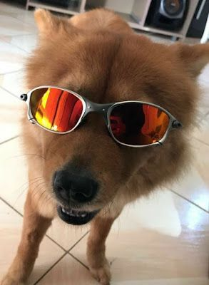

Funcionários suspeitam que ele aprendeu com motoboys no trânsito ao lado.
Em um zoológico do interior, um gorila chamado Tonhão virou sensação — e também problema — após aprender a fazer um gesto ofensivo com as mãos toda vez que alguém tenta tirar foto com flash. Segundo relatos, o animal levanta o dedo do meio com precisão cirúrgica e encara os visitantes com desprezo milenar. “Ele faz cara de deboche e ainda mastiga a banana devagar”, contou uma testemunha, visivelmente traumatizada. Funcionários acreditam que o comportamento foi aprendido ao observar motoristas irritados em um congestionamento próximo. "Teve um dia que ele imitou até o cara gritando ‘vai tomar no…’”, disse um tratador, cobrindo os ouvidos da filha. A direção do zoológico está tentando ensinar gestos mais apropriados, como joinha, tchauzinho e coração com as mãos, mas Tonhão até agora só responde com um olhar de “tenta mais, trouxa”.
“Mas é o Neymar dourado, pô!”
Um morador de Itapecópolis tentou trocar um X-tudo por uma figurinha rara do Neymar brilhante de 2014. O atendente recusou, o homem se revoltou e ameaçou o gerente com um álbum semi-completo. A polícia chegou, mas também quis ver se faltava a do Messi.
Agora atende por “Franga Sarada” e vende whey de milho.
Animal foi visto deitado com óculos escuros e fone de ouvido.
Foi parar no hospital alegando ter "visto Buda jogando Free Fire".
Internado com taquicardia mística, o sujeito afirma ter saído do próprio corpo, visitado o multiverso e sido bloqueado por uma entidade chamada “Xamã do Pix”. Médicos recomendam mais sono e menos YouTube espiritual.
“Errou feio? R$19,90 e Jesus entende. Errou feio de novo? Assinatura mensal.”